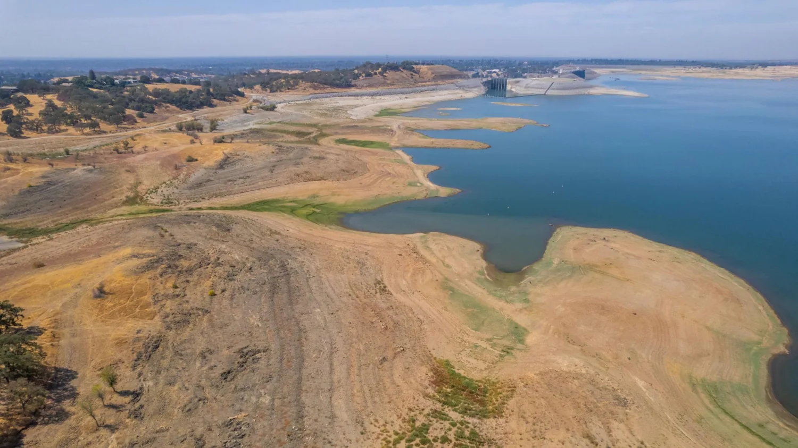

← All research areasHYDROEXLAB / RESEARCH
Water Security and Drought Resilience
Ongoing Research
Examining water availability and the resilience of water-supply systems.

Overview
HydroExLab investigates water availability, water supply reliability, and drought resilience to support sustainable water resources management.
Current Research Topics
Water Supply Reliability and Resilience
Examining how water supply systems meet competing demands under changing hydrologic conditions.
Drought Impacts on Water Availability
Understanding how drought influences water availability and the dependability of water supplies.